La producción habitual del taller: lana gruesa en colores que no se repiten de una pieza a otra. Según la pieza, se teje con lana natural teñida en origen o con hilados sintéticos de colores intensos.

PZ–028 · LANA TEÑIDA A MANO
Magenta Estepa
Punto trenzado, cuello caído. Tinte en pequeño lote.
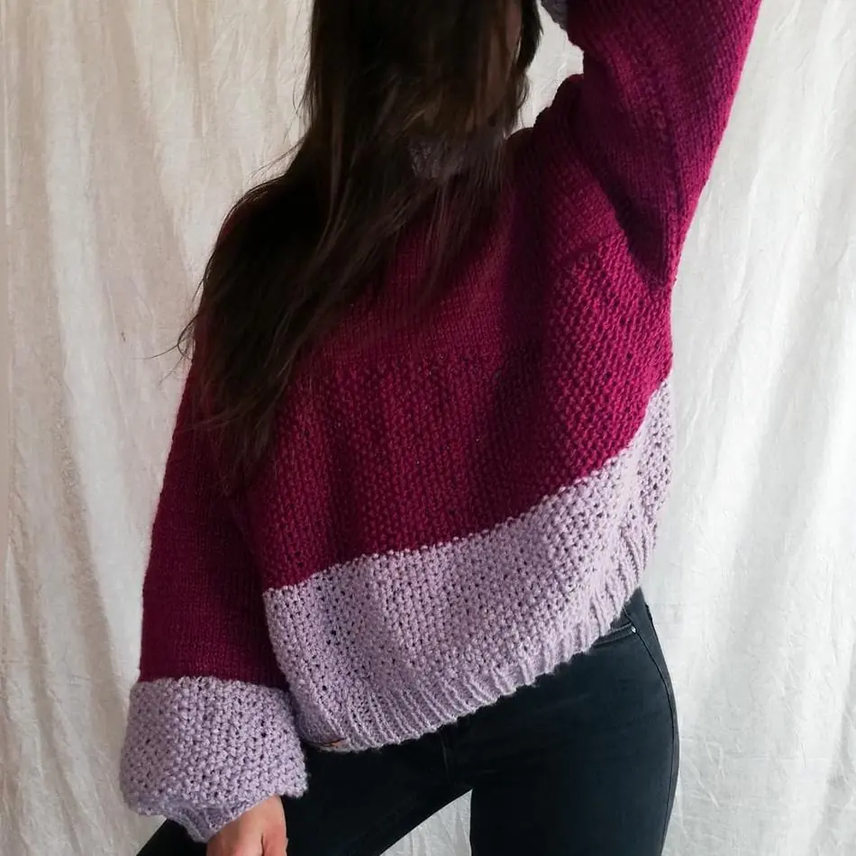
PZ–031 · LANA TEÑIDA A MANO
Bruma Andina
Bloques de color, mangas amplias. Degradado hecho a mano.
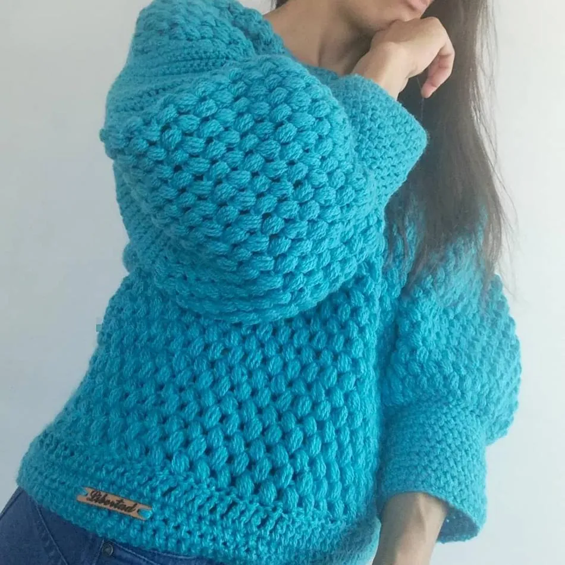
PZ–019 · LANA TEÑIDA A MANO
Turquesa Cordillera
Punto pompón grueso, cuello alto. Edición reducida.
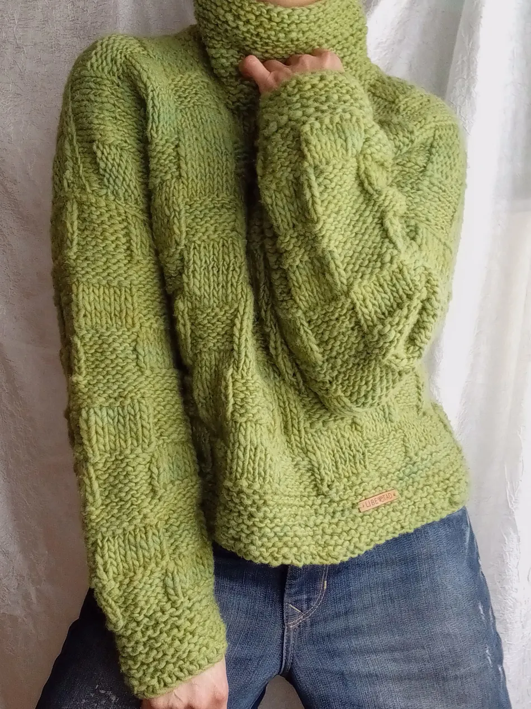
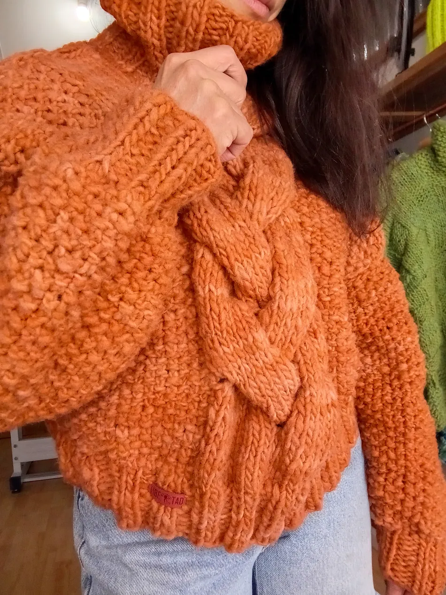
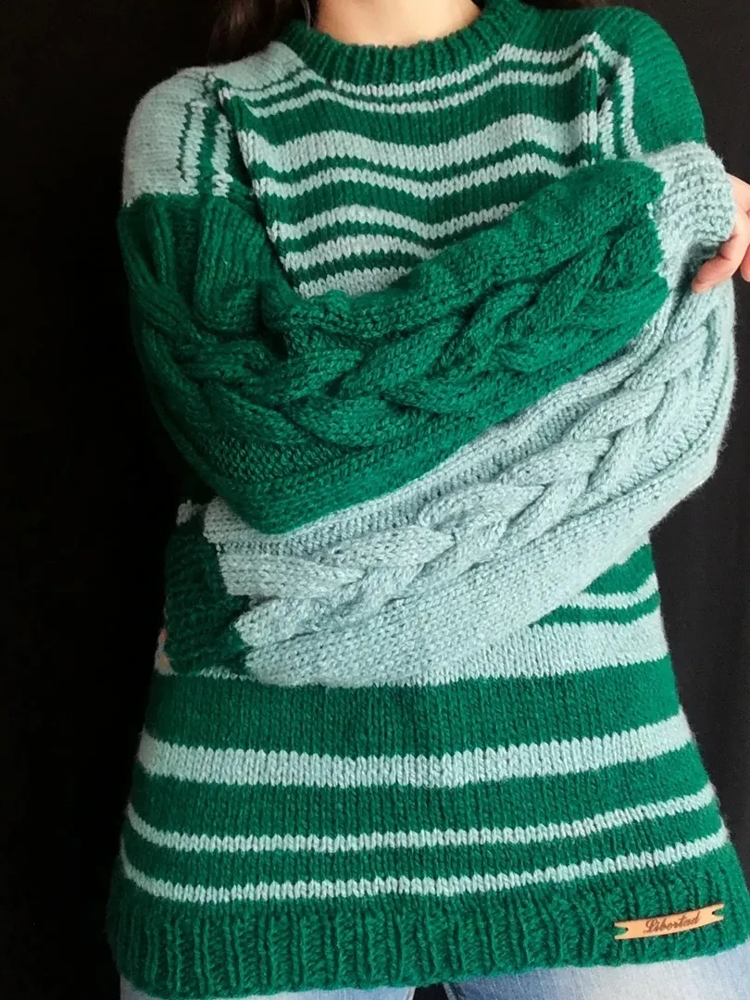
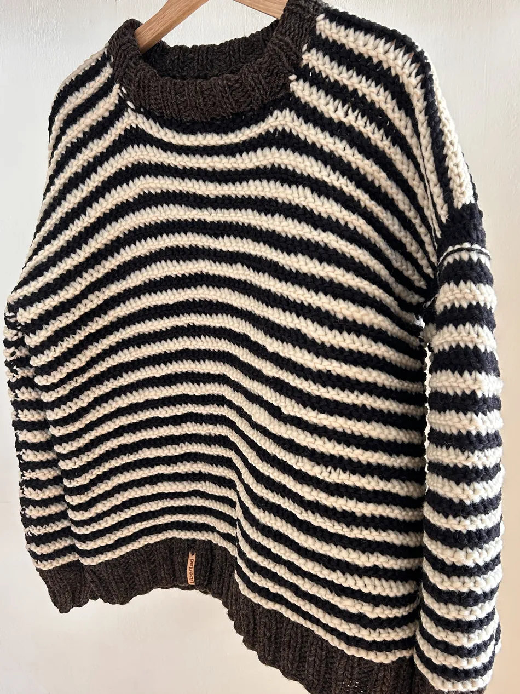
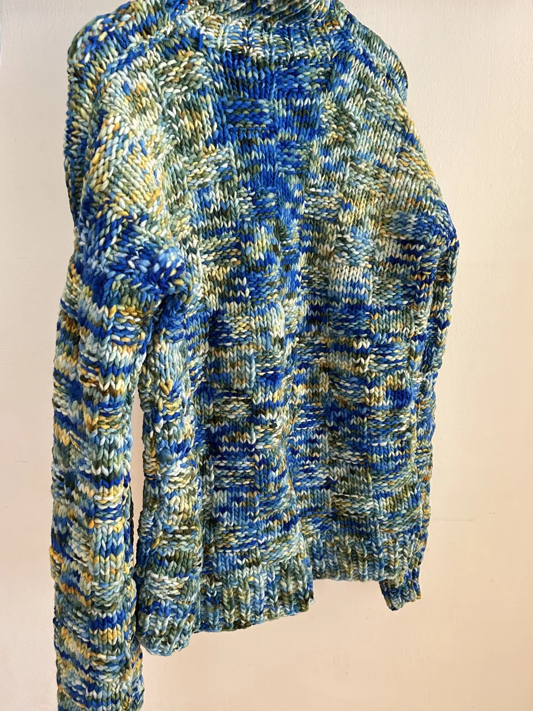
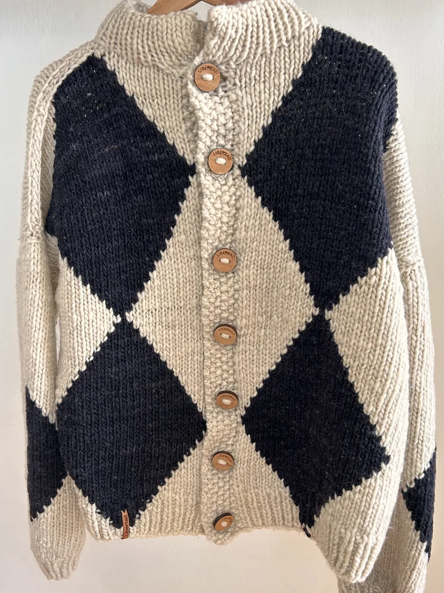
Cada pieza se documenta al momento de tejerse: fecha, lote de tinte, y estado. Cuando se vende, no vuelve a existir.
Consultar disponibilidad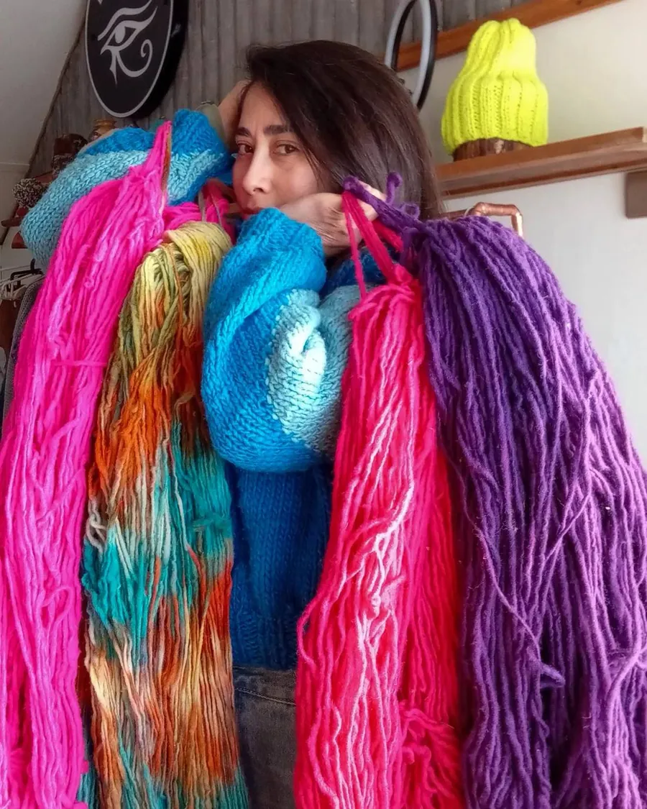
Selección de lana
La lana gruesa que usamos llega en lotes limitados. Cuando un color se agota, no siempre vuelve a estar disponible.
Por eso cada pieza usa un tono que tal vez no vuelva a repetirse — la variación nace de la elección, no de una fórmula.
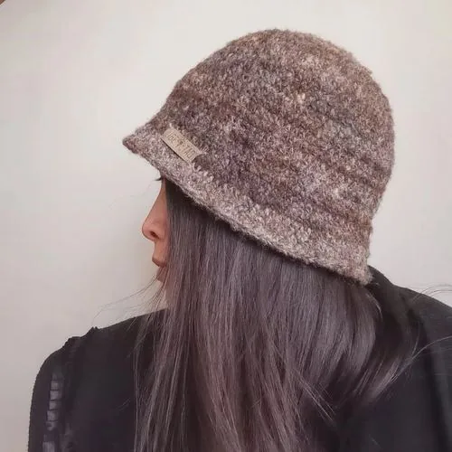
GORROS GUANTES
GUANTES
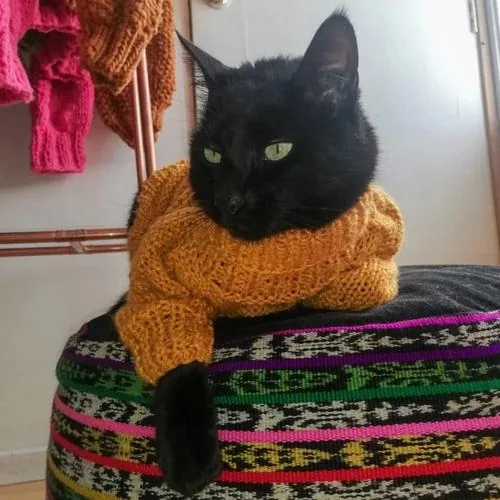
MASCOTAS